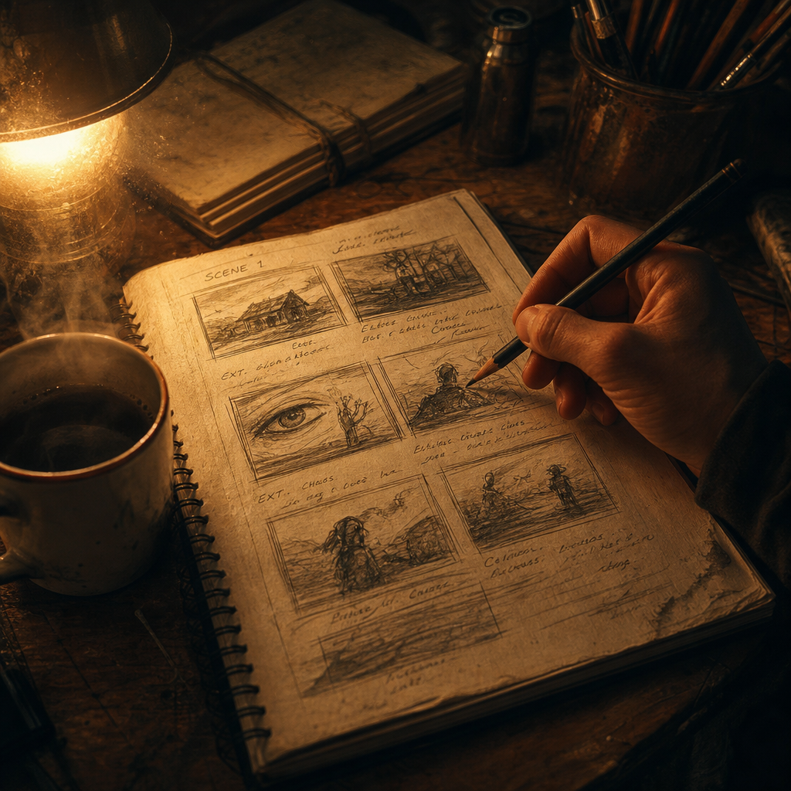
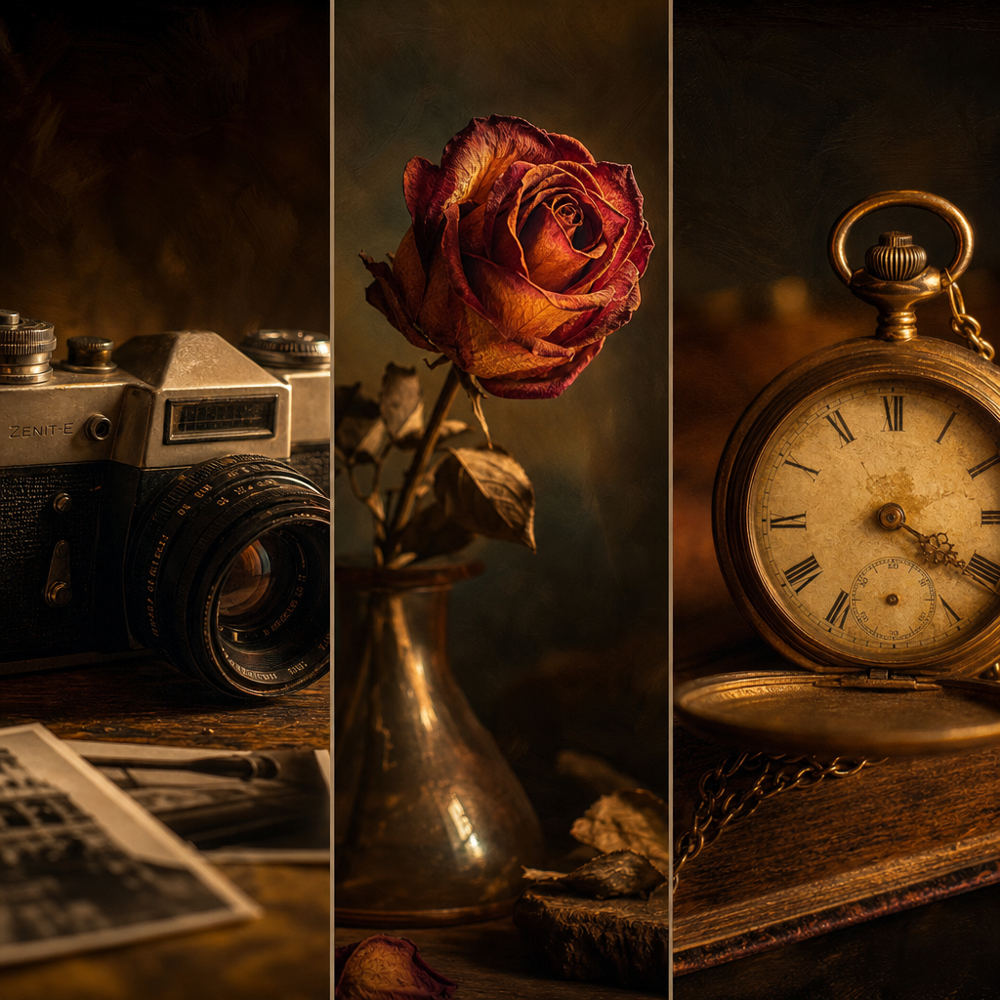
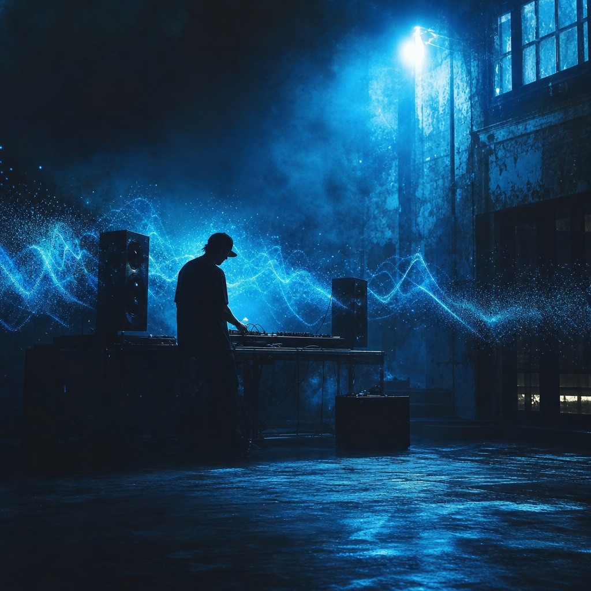

כשהבינה המלאכותית הפכה לכלי עבודה יומיומי, התחרות הויזואלית עברה ממכשירים לאסתטיקה. כל אחד יכול להפעיל מודל. הפחות יודעים איך לגרום לו להוציא משהו שמרגיש כמו שלהם.
הכללים הבאים זוקקו מאלפי איטרציות בפועל — סטוריבורדים, ניסויים, כישלונות וגילויים מקריים. הם לא קסם. הם משמעת.
הטעות הנפוצה ביותר: לפתוח את Midjourney, Veo או Kling ולהקליד. בלי כיוון, בלי מצב רגשי, בלי תכנון מבנה.
מה לעשות במקום:
המודל לא חושב במונחים של "סיפור". הוא מייצר frames. אתם זה שצריכים להחזיק את המסע.


קל לייצר תמונה אחת מדהימה. הקושי הוא לייצר עשר תמונות שמרגישות אחיות.
שלושה דברים שצריכים להישאר זהים לאורך הפרויקט:
טריק מעשי: reference images כקלט (תמיכת --cref, --sref, image-to-image). המודל ינשום את הסגנון שלכם במקום להמציא חדש כל פעם.
יוצרים רבים מייצרים את הוויזואל קודם, ואז "מחפשים מוזיקה שמתאימה". זו טעות שעולה ימי עריכה.
הסדר הנכון:
הקצב, הצבע והאנרגיה של המוזיקה הם המצפן. הוויזואל הוא תוצר. לא הפוך.

ה-Gen AI יברח לכם מהמסגרת. זה לא באג, זו תכונה.
תמונה אחת מתוך עשר תהיה טובה יותר ממה שתכננתם. תנועה אחת תיצור זווית שלא חשבתם עליה. המודל יציע פילטר או אווירה שמשפרים את הסיפור.
יוצרים בינוניים מאלצים את המודל לעשות בדיוק מה שתכננו.
יוצרים מעולים מזהים מתי המודל גילה משהו טוב יותר — וכותבים את הסטוריבורד מחדש.
השילוב היחיד שמייצר תוצר ייחודי: השליטה שלכם פוגשת את המקריות של ה-AI.
הצופה שלכם לא יזכור איזה מודל השתמשתם בו, איך פתרתם את ה-prompt engineering, או כמה seeds רצתם.
הוא יזכור את הרגע שעיניים נדלקו. את הצחוק של הילדה. את הנשימה שעצרה את הפעולה.
איך לבדוק את עצמכם:
הטכנולוגיה היא העיפרון. הסיפור הוא הציור.
חמשת הכללים האלה לא יהפכו אתכם ליוצרים גדולים אם הסיפור שלכם שטוח. הם יוודאו שהסיפור שלכם לא ידולל על ידי הכלי.
יוצרי התוכן הטובים בעולם של 2026 הם לא אלו שמפעילים את המודלים הכי חדשים.
הם אלו שיודעים מה הם רוצים שירגישו — ומפעילים את הכלים ככלים.